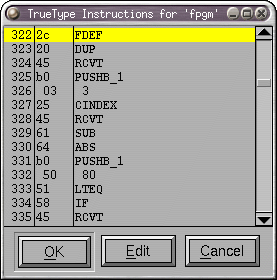
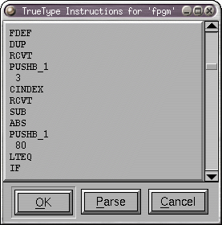
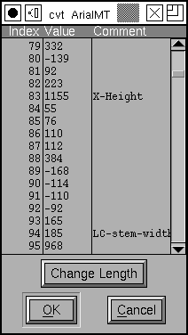

Viewing and Editing truetype instructions in FontForge.¶
 I shall not attempt to describe the mechanics of instructing truetype, if you want to understand it I refer you to the above links. (Microsoft has a similar set in but they are in word format).
This dialog shows the instructions associated with a glyph or truetype table (like fpgm or prep). If you move your mouse cursor over one of the instructions a brief help message will pop up describing that instruction. If you press the [Edit] button the dlg will change and you will be presented with a editable textarea containing the same instructions. You may modify these to your heart’s content. Pressing the [Parse] will parse your modifications and (if they parse) return you to the “help” mode.
Instructions like MIRP may be entered either in FontForge’s peculiar (but
marginally more mnemonic) style: MIRP[rnd,white] or as MIRP[00110], and
PUSHB_1 may be PUSHB[000].
You may also include an stack arguments on the same line as the instruction and FontForge will convert them into the appropriate pushes. So…
5 SRP0
is equivalent to
PUSHB_1
5
SRP0
You may also use the expression cvt(<val>) instead of a number. This will be
replaced by the index in the ‘cvt ‘ table of an entry which is (within one
em-unit of) <val>. So cvt(100) would return the index in ‘cvt ‘ of 100. If
there is no such entry, FontForge will create one.
When editing DELTA* instructions you might want to use the syntax:
PUSHB_3 6@12 8 1 DELTAP2
This means: Move point 8 by six delta-steps at 37 ppem (that’s not clear at first glance - assuming delta_base is 9, DELTAP2 works from 25 ppem to 25+15 ppem, in this example it’s 25+12 ppem). So it’s just a way of constructing an argument byte for DELTAP/C.
Editing the ‘cvt ‘ table directly¶
This dialog shows the initial contents of the ‘cvt ‘ table (before it has been modified by the ‘prep’ program). It is simply a list of signed 16bit values. You may change any value by clicking on it and typing a new value. You may also attach comments to entries, this can be helpful in reminding yourself what this index is used for. You may add new entries (at the end) with the [Change Length] button.
(You may also use the “cvt(<val>)” notation described above to add entries
to the cvt table without using this dialog.)